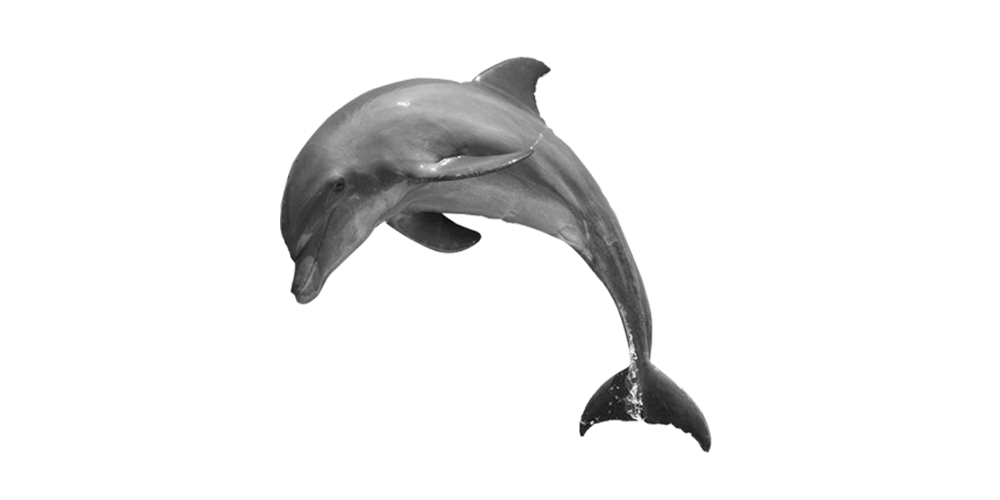

Dolphin
A dolphin is an aquatic mammal within the infraorder Cetacea. Dolphins are widespread. Most species prefer the warm waters of the tropic zones, but some, such as the right whale dolphin, prefer colder climates.

A dolphin is an aquatic mammal within the infraorder Cetacea. Dolphins are widespread. Most species prefer the warm waters of the tropic zones, but some, such as the right whale dolphin, prefer colder climates.
The beluga whale is an Arctic and sub-Arctic cetacean. It is one of two members of the family Monodontidae, along with the narwhal, and the only member of the genus Delphinapterus.
The orca or killer whale is a toothed whale belonging to the oceanic dolphin family, of which it is the largest member. It is the only extant species in the genus Orcinus and is recognizable by its black-and-white patterned body.
The humpback whale is a species of baleen whale. It is a rorqual and is the only species in the genus Megaptera. Adults range in length from 14–17 m and weigh up to 40 metric tons (44 short tons).
The sperm whale or cachalot is the largest of the toothed whales and the largest toothed predator. It is the only living member of the genus Physeter and one of three extant species in the sperm whale family, along with the pygmy sperm whale and dwarf sperm whale of the genus Kogia.